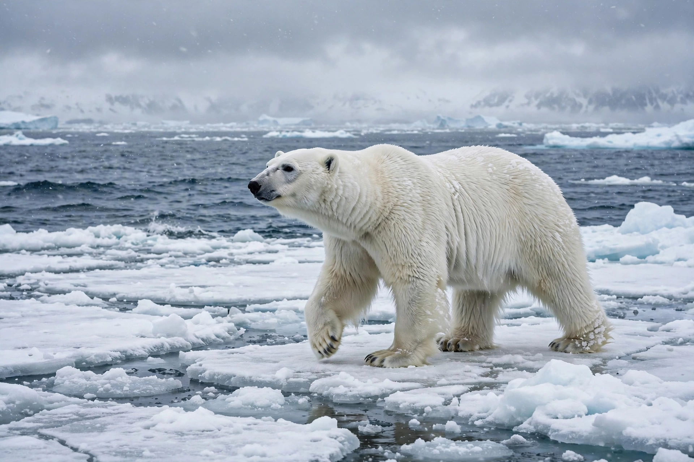

The polar bear (Ursus maritimus) is a hypercarnivorous bear whose native range lies largely within the Arctic Circle, encompassing the Arctic Ocean, its surrounding seas and land masses. It is the largest extant land carnivore.
| Polar bear | |
|---|---|
 | |
| Conservation | Vulnerable (IUCN) |
| Kingdom | Animalia |
| Family | Ursidae |
| Species | U. maritimus |
Adult males weigh 350–700 kg. Translucent fur appears white; skin is black. They are excellent swimmers and depend on sea ice to hunt ringed and bearded seals.
Climate change causing sea-ice loss is the main threat; polar bears were listed as threatened under the US Endangered Species Act in 2008. See also poaching controls and the 1973 Agreement on Conservation of Polar Bears.
Revered in Inuit culture, polar bears are icons of the Arctic and climate change, and appear on Canadian currency and as mascots.